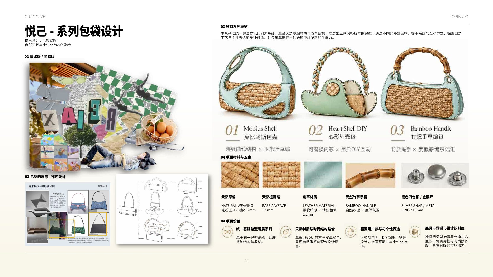
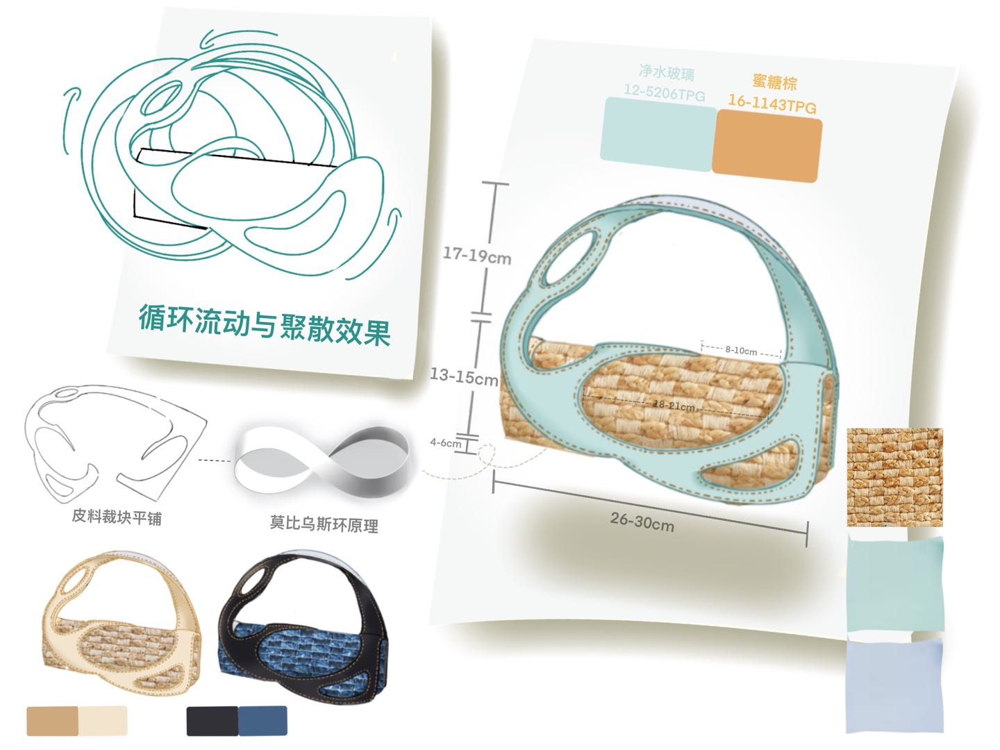
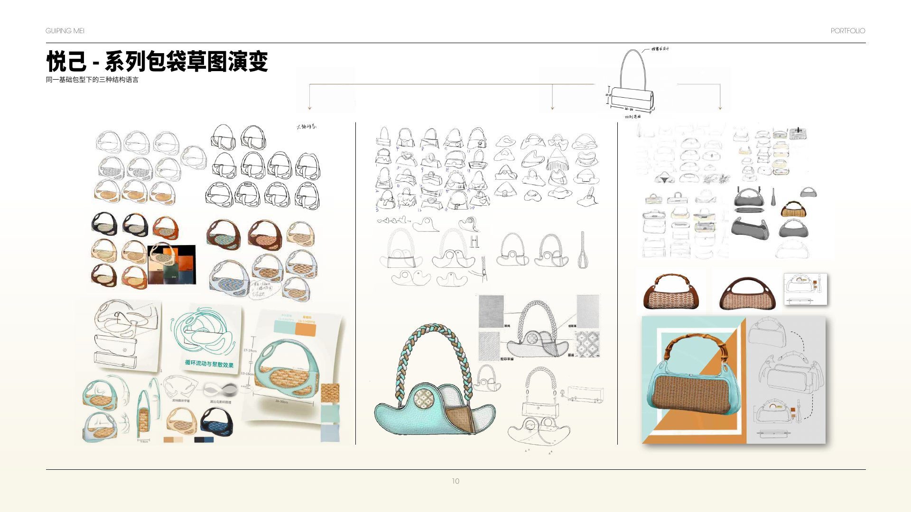
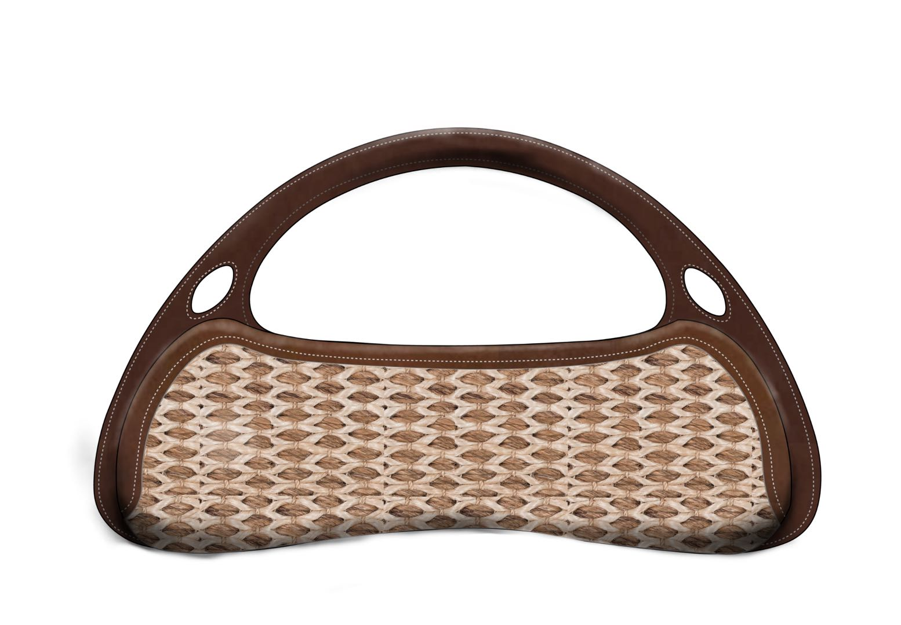
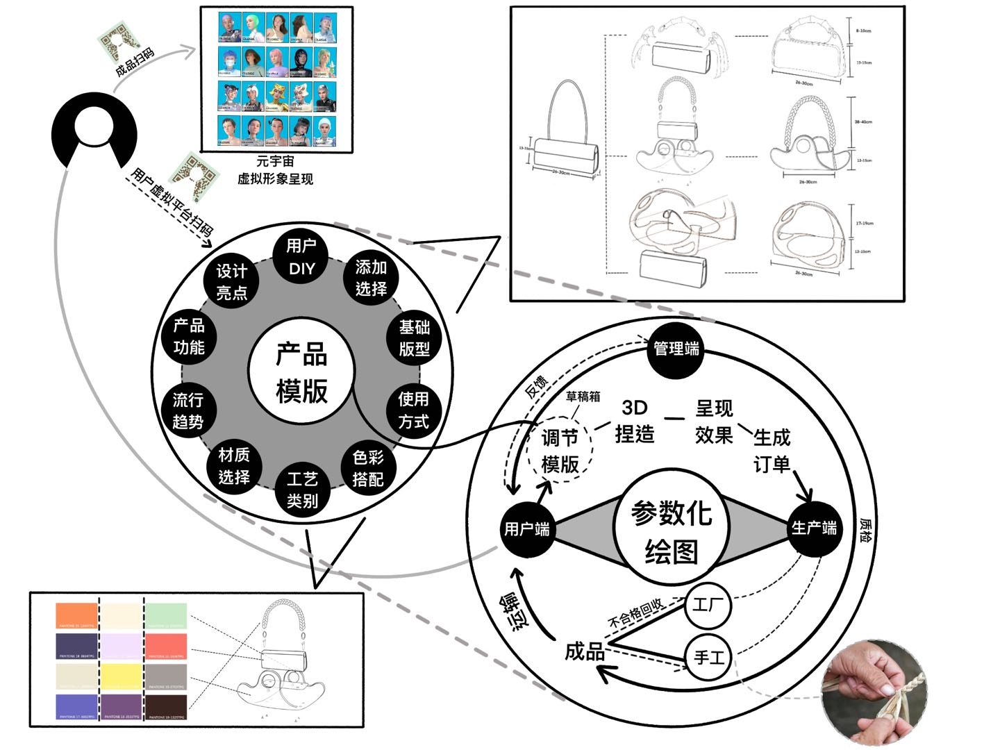
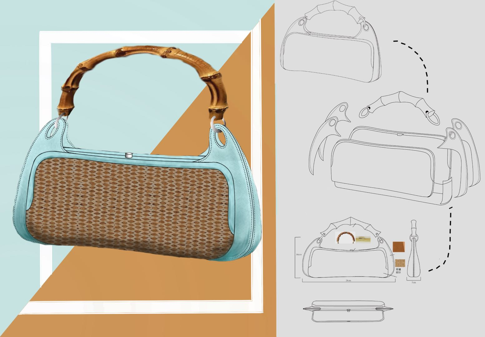
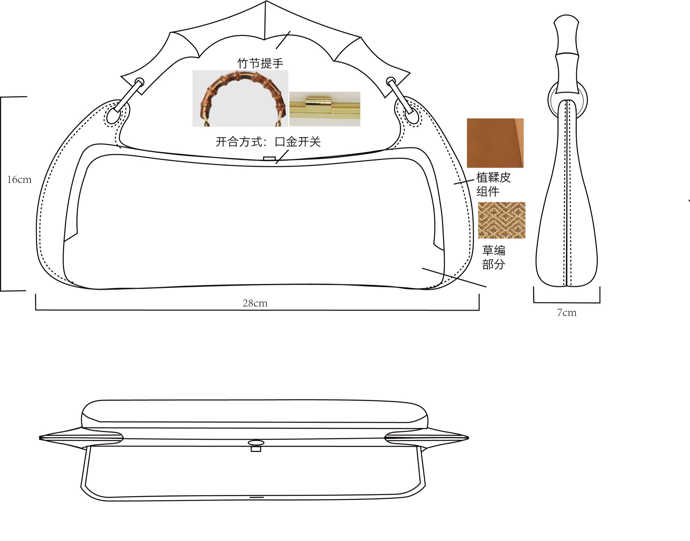
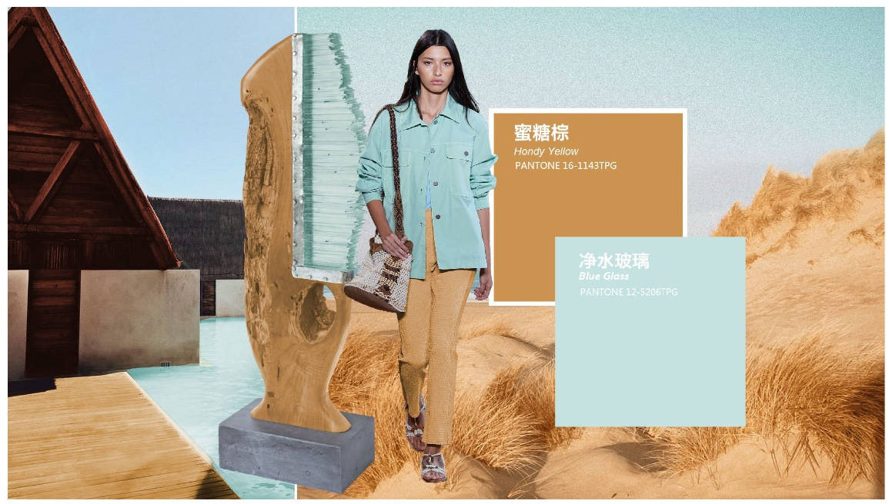

悦己 · Natural
Natural craft, shaped for contemporary use.
以法棍包为基础，将玉米叶编织、拉菲草、皮革与竹节手柄组合成三种产品方向。天然材料不是装饰，而是决定触感、开合和轮廓的结构核心。
The collection balances recognisable bag architecture with tactile irregularity, turning natural fibre into a repeatable and customisable product language.
FAMILY3 bag directions
VALUECustomisable details
MATERIALNatural + leather
01 / Material language
Woven irregularity meets a controlled edge.
编织材料提供温度和不完全的纹理；皮革包边与竹节提手提供稳定的轮廓和耐用触点。
Corn-leaf weave · Raffia · Leather · Bamboo

02 / Form development
Three handles, three ways to carry the same idea.
从连续草图中筛选出手挽、心形与竹节提手三条路线，并让编织面板成为系列中可变化的视觉中心。
Sketch selection · proportion · handle study

03 / Product system
From one bag to a flexible family.
最终方案补充正侧背视图、尺寸、材料与部件逻辑，让系列可以进入进一步打样、配色与市场化开发。
Technical view · colourway · application




Product valueNatural material + fashion · User interaction · Customisation · Market potential
悦己 keeps the irregular life of natural fibre visible inside a clear, usable product system.
Next: Metalworking →